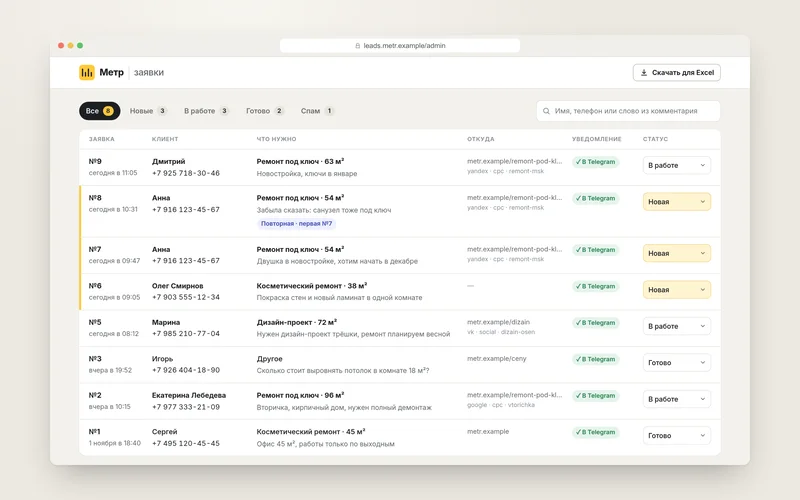
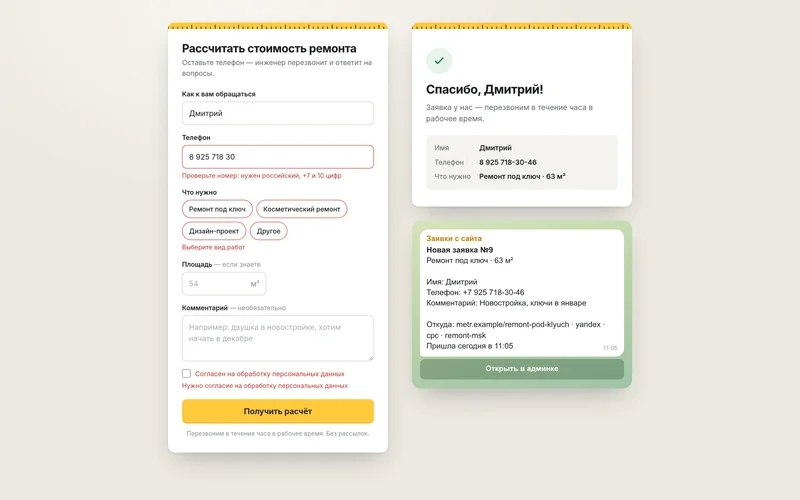
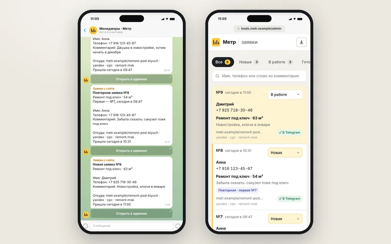
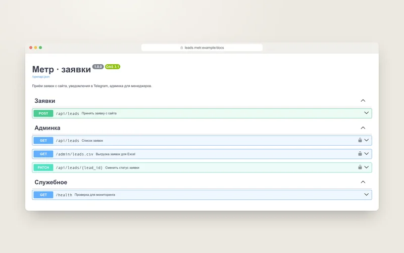

Сервис заявок для «Метра»
Вымышленная компания «Метр» ремонтирует квартиры. Сервис принимает заявки с сайта, сразу пишет о них менеджерам в Telegram и собирает в простой админке — со статусами, поиском и выгрузкой в Excel.
- СтекPython · FastAPI
- ХранениеSQLite — один файл
- УведомленияВ Telegram, сразу
- Тесты70 тестов на pytest
Задача
Заявки с сайта приходят на общую почту. Менеджер видит их через пару часов, часть попадает в спам, а кому уже перезвонили — непонятно.
Нужен сервис, который принимает заявки с формы на сайте, сразу сообщает о них менеджерам и показывает, что с каждой заявкой происходит.
Решение
Заявка доходит от формы до менеджера за секунду и не теряется, даже если Telegram недоступен.
- Форма на сайте
- Проверка
- База
- Telegram
- Админка
Форма за одну строку
Подключается к любому сайту и работает даже без JavaScript. Ошибки — по-русски и под каждым полем.
Уведомление в Telegram
Что нужно, площадь, имя, телефон и откуда пришёл посетитель: страница и UTM-метки. Под сообщением — кнопка «Открыть в админке».
Админка для менеджеров
Статусы «Новая», «В работе», «Готово» и «Спам», поиск по имени, телефону и комментарию, выгрузка для Excel.
Защита от мусора
Невидимое поле-ловушка для ботов и лимит заявок с одного адреса. Капчу посетителю решать не нужно.
Название компании, виды работ, текст после отправки и ссылка на политику обработки данных лежат в одном файле настроек — их можно менять без программиста.








Как устроено
Приём заявок, хранение и отправка уведомлений разделены. Посетитель получает ответ сразу после записи в базу, а Telegram работает в фоне — его сбой не ломает приём заявок.
- app.py
- storage.py
- outbox.py
- Telegram
app.py- Приём заявок: проверка полей, лимит, ответ посетителю
schemas.py- Поля формы и ошибки по-русски
domain.py- Телефоны, даты, защита выгрузки — чистые функции
storage.py- SQLite: заявки и очередь уведомлений
outbox.py- Отправляет уведомления в фоне и повторяет при сбоях
telegram.py- Текст уведомления и запрос к Telegram
admin.py- Админка, выгрузка для Excel и API для CRM
company.toml- Настройки компании
Ключевые решения
Сначала база, потом Telegram
Заявка и задание на уведомление записываются одной транзакцией. Если Telegram недоступен, сервис повторяет отправку сам — через 30 секунд, минуту, две и дальше. Задания хранятся в базе и переживают перезапуск.
Двойной клик — одна заявка
У каждой формы свой ключ. Повторная отправка после двойного клика или обрыва связи получает тот же ответ, но вторая заявка не появляется.
Повторные обращения видны
8 (916) 123-45-67, +7 916 123 45 67 и 9161234567 — один номер. Если человек написал снова в течение суток, заявка помечается «Повторная» со ссылкой на первую.
Боту — обычное «Спасибо»
Если заполнено поле-ловушка, бот получает тот же ответ, что и человек, и не понимает, что попался. Заявка уходит в «Спам» без уведомления.
Выгрузка открывается в Excel
Двойным кликом и без «кракозябр». Формула, введённая в поле «Имя», не выполнится: перед ней ставится апостроф.
Лишнего не храним
IP посетителя нужен только для лимита и в базу не попадает. Шрифты лежат в самом сервисе, поэтому страница не обращается к сторонним серверам.
Тесты
70 тестов проходят меньше чем за секунду и без сети: вместо Telegram — поддельный сервер, а часы в тестах можно подвинуть вперёд.
pytest -q
......................................................................[100%]
70 passed in 0.94s
ruff check .
All checks passed!- Форматы телефонов и ошибки в каждом поле
- Ловушка для ботов, лимит с одного адреса и доверие к заголовкам прокси
- Двойная отправка формы и повторные обращения в течение суток
- Текст уведомления слово в слово и кнопка «Открыть в админке»
- Сбой сети, лимит Telegram, неверный токен и перезапуск сервиса
- Вход в админку, поиск, смена статуса и защита от подделки запроса
- Выгрузка для Excel: кодировка, разделитель и защита от формул
Тесты и линтер запускаются на GitHub при каждом изменении кода.
Открытые вопросы
- Сервис рассчитан на один процесс: лимит частоты хранится в памяти. Для нескольких копий нужны Redis и PostgreSQL.
- Один логин на всех менеджеров и нет истории, кто менял статус.
- Уведомления — только в Telegram. CRM подключается через API, но готовых интеграций с amoCRM или Битрикс24 нет.
- Текст согласия и политику обработки персональных данных готовит компания.
Результат
Код с тестами и README: как подключить форму к сайту, настроить Telegram и запустить сервис на своём сервере — с примерами для systemd и nginx. Плюс короткая сводка — такая же, как на этой странице.
Нужен такой сервис?
Расскажите, откуда приходят заявки и где они теряются, — предложу решение и назову цену и срок до начала работы.